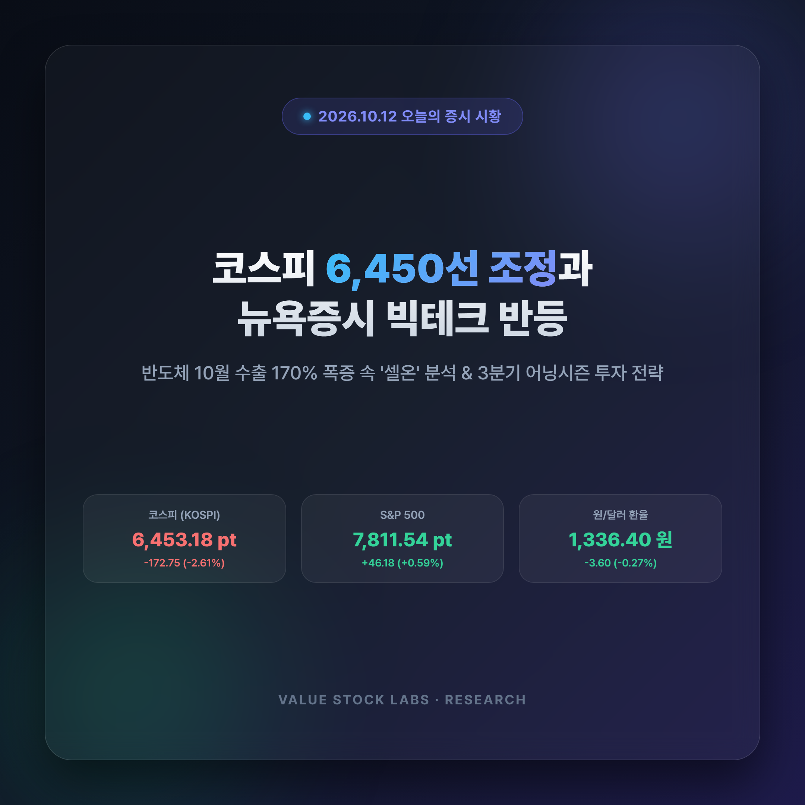
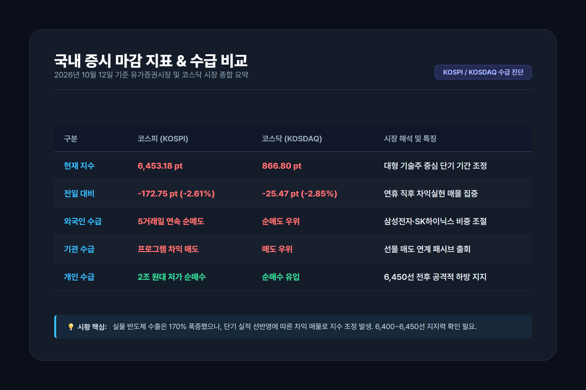
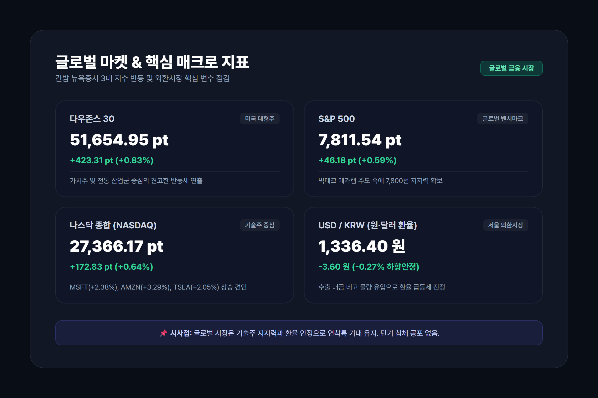
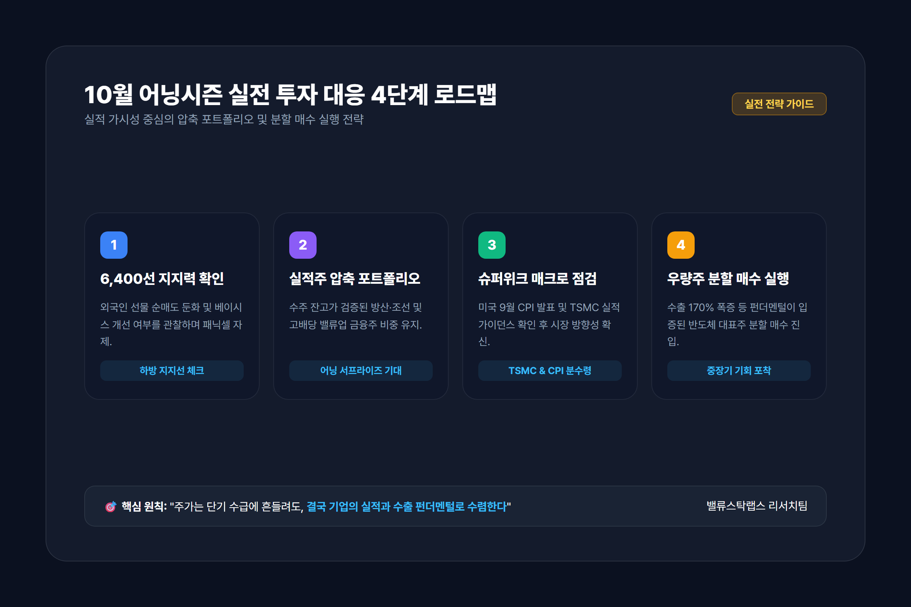

오늘의 증시 시황: 코스피 6,450선 테스트와 뉴욕증시 반등, 10월 어닝시즌 투자 전략

1. 국내 증시 현황: 코스피 6,450선 지지력 테스트와 외국인 수급 분석
국내 증시가 연휴 직후 대형 기술주의 차익실현 매물 압박을 받으며 단기 변동성 구간을 지나고 있습니다. 코스피 지수는 전 거래일 대비 172.75포인트(-2.61%) 조정을 받으며 6,453.18포인트를 기록 중이며, 코스닥 지수 역시 25.47포인트(-2.85%) 하락한 866.80포인트선에서 지지력을 시험하고 있습니다.

시장 참여자별 수급 구조 분석
지수 하방 압력의 주요 원인은 외국인 투자자의 5거래일 연속 순매도세입니다. 외국인은 유가증권시장에서 대형 전기전자 업종을 중심으로 비중을 덜어내고 있습니다. 기관 역시 선물 매도와 연계된 기계적 프로그램 차익 매물을 출회하며 지수 하락을 부채질했습니다.
반면 개인 투자자는 6,450선 전후에서 2조 원대 이상의 공격적인 저가 분할 매수세를 유입시키며 하방을 방어하고 있습니다.
| 시장 구분 | 코스피 (KOSPI) | 코스닥 (KOSDAQ) | 비고 및 수급 특징 |
|---|---|---|---|
| 현재 지수 | 6,453.18 pt | 866.80 pt | 단기 숨고르기 기간 조정 |
| 등락폭 / 등락률 | -172.75 pt (-2.61%) | -25.47 pt (-2.85%) | 대형 기술주 낙폭 반영 |
| 외국인 수급 | 5거래일 연속 순매도 | 순매도 우위 | 전기전자·2차전지 중심 차익 매물 |
| 기관 수급 | 프로그램 차익 매도 | 매도 우위 | 선물 매도 연계 패시브 출회 |
| 개인 수급 | 2조 원대 저가 순매수 | 순매수 유입 | 6,450선 전후 공격적 하방 지지 |
종목별로는 삼성전자(255,500원, -2.48%)와 SK하이닉스(1,614,000원, -3.99%)가 동반 조정을 겪고 있으나, LG에너지솔루션(402,500원, +0.37%)과 현대차(324,500원, 보합)는 견조한 흐름을 나타내며 업종별 순환매가 전개되고 있습니다.
2. 뉴욕 증시 3대 지수 반등: 빅테크 주도 상승과 매크로 환율 환경
국내 증시의 단기 조정과 달리 간밤 뉴욕 증시는 빅테크 중심의 저가 반발 매수세가 강하게 유입되며 3대 주요 지수가 일제히 반등 마감했습니다.
- 다우존스 30 산업평균지수: 51,654.95 pt (+423.31 pt, +0.83%)
- S&P 500 지수: 7,811.54 pt (+46.18 pt, +0.59%)
- 나스닥 종합지수: 27,366.17 pt (+172.83 pt, +0.64%)
- 필라델피아반도체 지수: 12,572.42 pt (-51.80 pt, -0.41%)

뉴욕 증시 반등의 세 가지 핵심 동력
- 빅테크 메가캡 주도력: 마이크로소프트(MSFT, $535.07, +2.38%), 아마존(AMZN, $262.43, +3.29%), 테슬라(TSLA, $382.70, +2.05%), 알파벳(GOOGL, $351.66, +0.97%) 등 주요 빅테크 기업들이 견고한 매수세를 보이며 시장 심리를 지지했습니다.
- 원/달러 환율의 하향 안정화: 서울 외환시장에서 원/달러 환율은 전일 대비 3.60원 하락한 1,336.40원(-0.27%)을 기록하며 1,330원대 중반에 안착했습니다. 대미 수출 호조에 따른 수출 기업들의 네고 물량이 꾸준히 유입되며 원화 환율의 추가 약세를 방어하고 있습니다.
- 가상자산 시장의 차분한 횡보: 비트코인은 1억 1,304만 원(-0.29%) 선에서 등락하며 주요 매크로 지표 발표를 앞두고 차분한 관망세를 보이고 있습니다.
3. 반도체 수출 170.9% 폭증 vs '셀온(Sell-on)': 펀더멘털과 수급 괴리 진단
현재 한국 증시의 가장 큰 화두는 "실물 수출 펀더멘털의 압도적 호조와 주가 흐름의 단기 엇박자"입니다.
10월 1~10일 반도체 수출 122억 달러 신기록
관세청이 발표한 10월 1~10일 수출입 통계에 따르면, 우리나라 반도체 수출액은 122억 달러를 기록하며 전년 동기 대비 무려 170.9% 폭증했습니다. 조업일수 영향을 감안하더라도 AI 데이터센터향 고대역폭 메모리(HBM)와 서버용 DDR5 메모리의 수요가 공급을 지속적으로 초과하고 있음을 명확히 증명하는 수치입니다.
그럼에도 주가가 조정을 받는 세 가지 이유
- 사상 최대 실적 발표 직후의 '재료 소멸(Sell-on News)': 삼성전자가 분기 영업이익 100조 원 돌파라는 역사적 실적을 발표한 직후, 호재가 이미 단기 주가에 상당 부분 선반영되었다는 인식이 확산되며 차익실현 매물이 집중되었습니다.
- 글로벌 패시브 ETF의 분기 리밸런싱: 글로벌 펀드들이 4분기 초를 맞아 특정 업종 쏠림을 완화하는 과정에서 기계적 비중 조절 매물이 출회되었습니다.
- 단기 공급망 노이즈와 경계감: 차세대 HBM4 진입과 파운드리 수율 경쟁 등 기술 전환기에 따른 일시적 관망세가 겹쳤습니다.
증권가 주요 리서치센터에서는 "실물 수출 데이터가 170% 이상 증가하는 국면에서의 주가 조정은 추세적 붕괴가 아니라 전형적인 '상승 추세 내 건강한 기간 조정'에 가깝다"며, 6,400~6,500선 부근을 분할 매수 적기로 평가하고 있습니다.
4. 이번 주 어닝시즌 슈퍼위크 캘린더와 실전 투자 대응 로드맵
이번 주는 매크로 지표와 기업 실적이 동시에 쏟아지는 어닝시즌 슈퍼위크(Super Week)입니다.

이번 주 핵심 이벤트 캘린더
- 미국 9월 소비자물가지수(CPI) 발표: 미국 인플레이션 둔화 추세와 연준(Fed)의 향후 추가 금리 인하 속도를 가늠할 핵심 지표.
- TSMC 3분기 실적 발표 (10월 15일 예정): 글로벌 AI 반도체 파운드리 가동률과 엔비디아 향 첨단 패키징 수요의 지속성을 확인할 수 있는 글로벌 가늠자.
- 월가 대형 금융주 실적 공개: JP모건 체이스, 웰스파고, 씨티그룹 등의 3분기 성적표가 공개되며 글로벌 기업 실적 장세가 본격화됩니다.
투자자 대응 3대 실전 전략
- 전략 1: 코스피 6,400선 지지력 확인 후 분할 매수
외국인의 선물 매도세가 둔화되고 베이시스가 콘탱고로 전환되는 시점을 확인해야 합니다. 섣부른 추격 매도보다는 6,400~6,450선 전후에서의 지지력을 확인한 뒤 분할 매수로 접근하는 전략이 안전합니다. - 전략 2: 실적 가시성 중심의 압축 포트폴리오 구축
단순 기대감만으로 오른 테마주는 어닝시즌에 변동성이 극대화될 수 있습니다. 3분기 어닝 서프라이즈 가능성이 높고 수주 잔고가 검증된 방산(한화에어로스페이스), 조선(삼성중공업), 저PBR 고배당 밸류업 금융주 비중을 유지하는 전략이 권장됩니다. - 전략 3: 환율 1,330원대 안정 흐름 체크
원/달러 환율이 1,330원대에서 안정세를 유지하고 있으므로 환율 급등에 따른 외국인 추가 이탈 리스크는 제한적입니다. 환율 변동성을 지켜보며 포트폴리오를 재정비할 시점입니다.
5. 결론 및 요약
- 지수 상황: 코스피는 외국인 5거래일 연속 순매도에 밀려 6,453선에서 지지력 테스트를 진행 중이나, 뉴욕 증시는 빅테크 주도로 3대 지수가 모두 반등하며 글로벌 투자 심리는 견고하게 유지되고 있습니다.
- 펀더멘털: 10월 1~10일 반도체 수출이 170.9% 폭증(122억 달러)한 사실에서 알 수 있듯, 실물 경제와 기업 이익 체력은 사상 최고 수준입니다. 현재의 주가 약세는 재료 소멸에 따른 일시적 '셀온' 현상입니다.
- 대응 방향: 이번 주 미국 9월 CPI와 TSMC 실적 발표를 분수령으로 시장의 방향성이 결정될 예정입니다. 단기 변동성에 흔들리지 말고, 실적 가시성이 검증된 수출 주도주와 가치주를 중심으로 분할 매수 관점을 견지하는 것이 유리합니다.
📚 참고 자료 및 공식 출처 (Reference URLs)
- 한국거래소(KRX) 정보데이터시스템 - 10월 12일 국내 증시 투자자별 순매수 및 시가총액 상위 종목 현황
- 관세청 수출입무역통계 - 2026년 10월 1~10일 수출입 잠정치(반도체 수출 122억 달러 집계)
- Yahoo Finance - 글로벌 주요 지수(다우, S&P500, 나스닥, 필라델피아반도체) 및 환율 실시간 쿼트
- 연합인포맥스 금융시장 시황 - 코스피 외국인 수급 및 반도체주 차익실현 셀온 현상 분석
- Upbit 암호화폐 시세 - 가상자산 비트코인 및 알트코인 실시간 시세 데이터